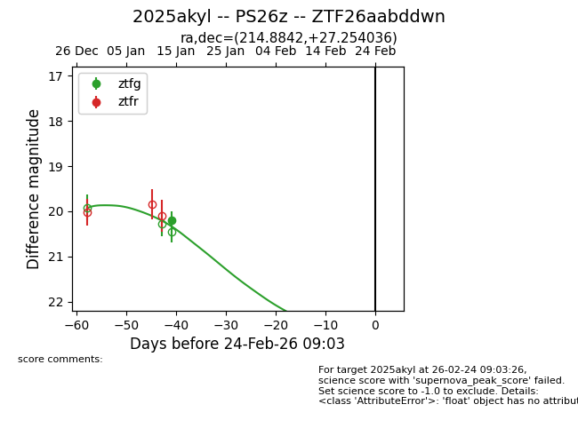
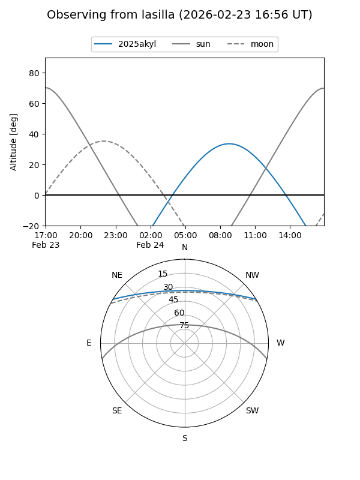
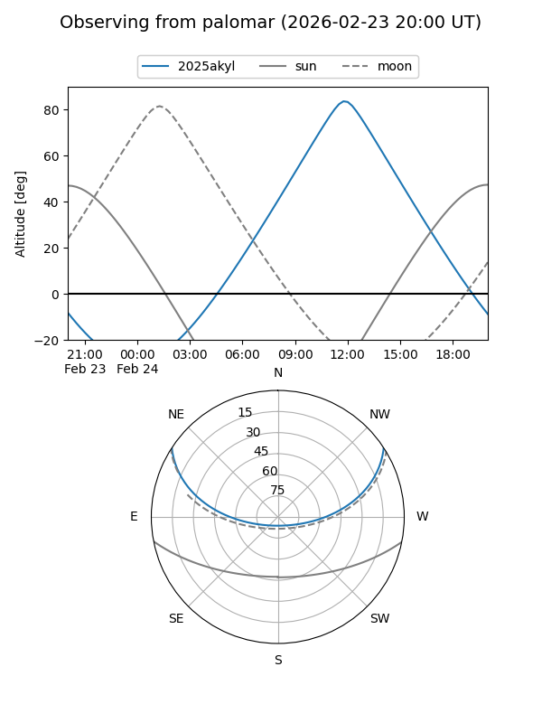
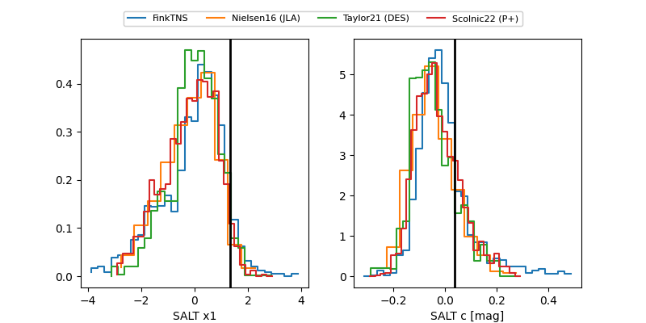

2025akyl
Target 2025akyl at 2026-01-16 13:25
Aliases and brokers:
FINK: link
Lasair: link
ALeRCE: link
TNS: link
YSE: link
alt names
ZTF26aabddwn (ztf,fink_ztf)
2025akyl (tns,yse)
PS26z (panstarrs)
Coordinates:
equatorial (ra, dec) = 214.8842,+27.25404
equatorial (HMS+DMS) = 14:19:32.20,+27:15:14.53
galactic (l, b) = (38.3770,+70.43441)
Flags:
Photometry:
last ztfg=20.19
1 ztfg detections
Lightcurve

Visibility


Additional plots
